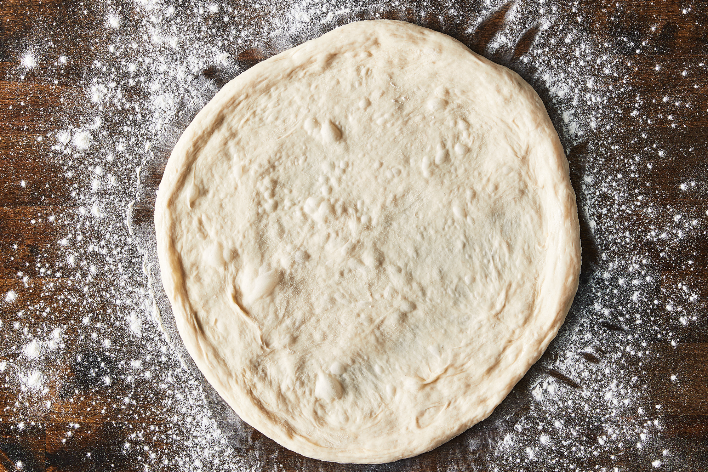
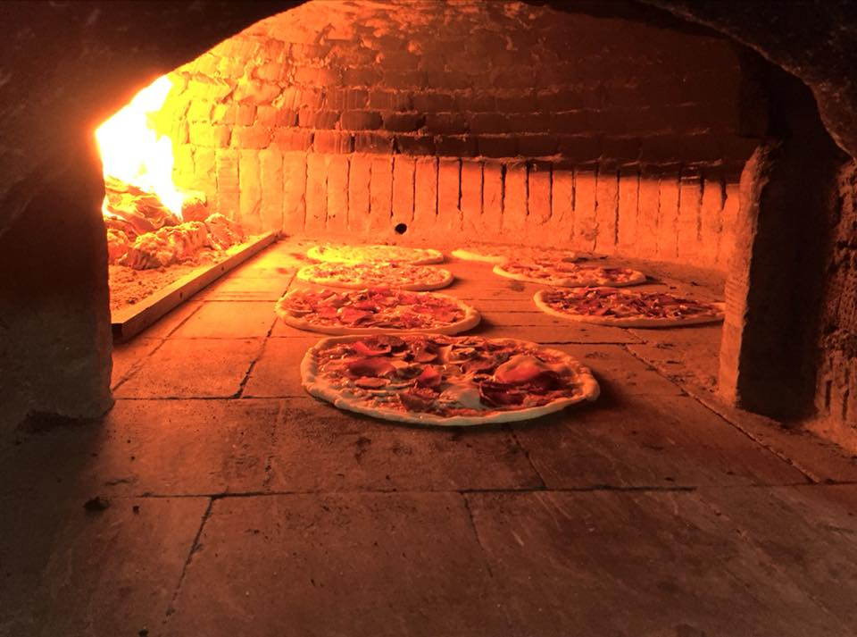
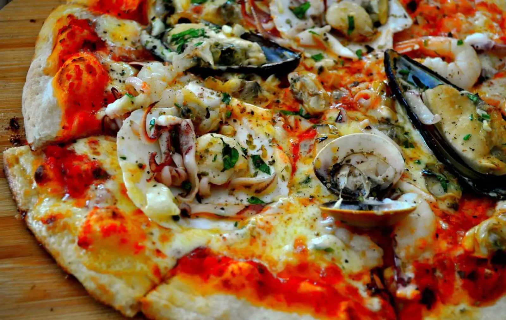
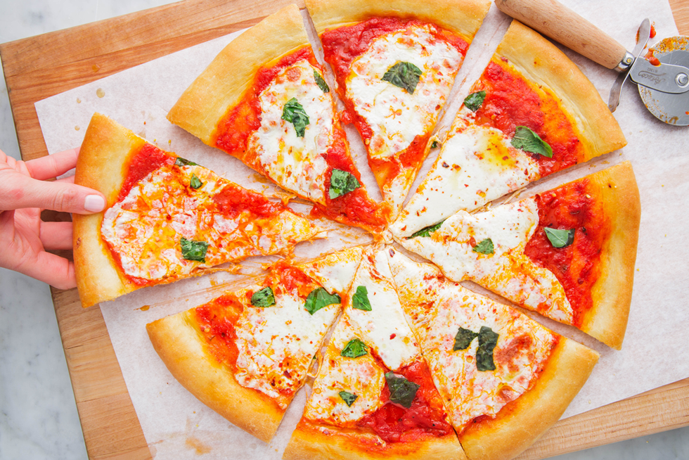

|  |
 |
 |

PERGADITJA
Kalojeni miellin në sitë dhe hidheni në një enë të gjërë.
Shtoni majanë dhe ujin dhe punojeni brumin me dorë.
Kalojeni në banak dhe punojeni për 5 minuta deri sa brumi të jetë i butë dhe elastik.
Vendoseni topthin e brumit në një enë të të lyer me pak vaj ulliri dhe mbulojeni me pecetë kuzhine.
Lëreni në një vend të ngrohtë deri sa brumi të ketë ardhur për një orë.
Ngroheni furrën në 220°C dhe vazhdoni të punoni brumin me grushta për një minutë deri sa bulëzat e ajrit të shpërbëhen.
Përhapeni brumin në formë rrethore (25 cm) dhe vendoseni në një tepsi.
Lyejeni sipërfaqen me salcë domatesh duke lënë 2 centimetra bosh në pjesën e jashtme të petës. Shtoni djathin mocarela, kërpudhat, ullinjtë dhe specat. Në fund spërkateni picën me vajin e ullirit.
Piqeni për 12-15 minuta deri sa pica të jetë krokante nga jashtë dhe djathi të ketë shkrirë dhe të ketë marrë një ngjyrë të artë.
Shënim: Për këtë recetë, mbushja e picës mund të bëhet me përbërës të tjerë

PERBERSIT
- 300g miell të bardhë për gatimin e bukës
- 1 lugë e gjysmë çaji me maja të thatë
- Gjysëm luge çaji me kripë
- 180ml ujë mjaftueshëm të nxehtë sa ta durojë dora
- 4lugë gjelle me salcë domatesh të thara në diell.
-
150g djathë mocarella të prerë në copa.
- Gjysëm speci jeshil të pastruar nga farat dhe të prerë hollë.
- 10 kokrra ullinj të prera në feta
- 2 lugë çaji me vaj ulliri
PIZZA MENU
Pizza Vieneze
Domate, mozarela, salcice gjermane, oregano dhe vaj.
Pizza Capricciosa
Mozarela, domate, kerpudha, artichoke, proshute, ullinj, vaj.
Pizza Kater Stinet
Permban disa nga ingridientet e Capricciosez, por jo te perziera.
Pizza Kater Djathrat
Domate, mozarela, stracchino, fontina, gorgonzola.
Pizza Siciliane
Ka forme drejtkendeshe dhe eshte e mbushur me salce domateje, djathe. Kjo lloj pice eshte prezantuar per herr te pare ne 1994.
Pizza e Bardhe
Salce domateje, salce e tharte. Vendet e lindjes ne SHBA, i hedhin kesaj pice mozarela, djathe, vaj ulliri, borzilok dhe hudher.
Pizza Ripieno
Eshte e mbushur me ingridiente, sallam, mozarela. Kur piqet ne fillim, ka formen e nje gjysme rrethi.
|